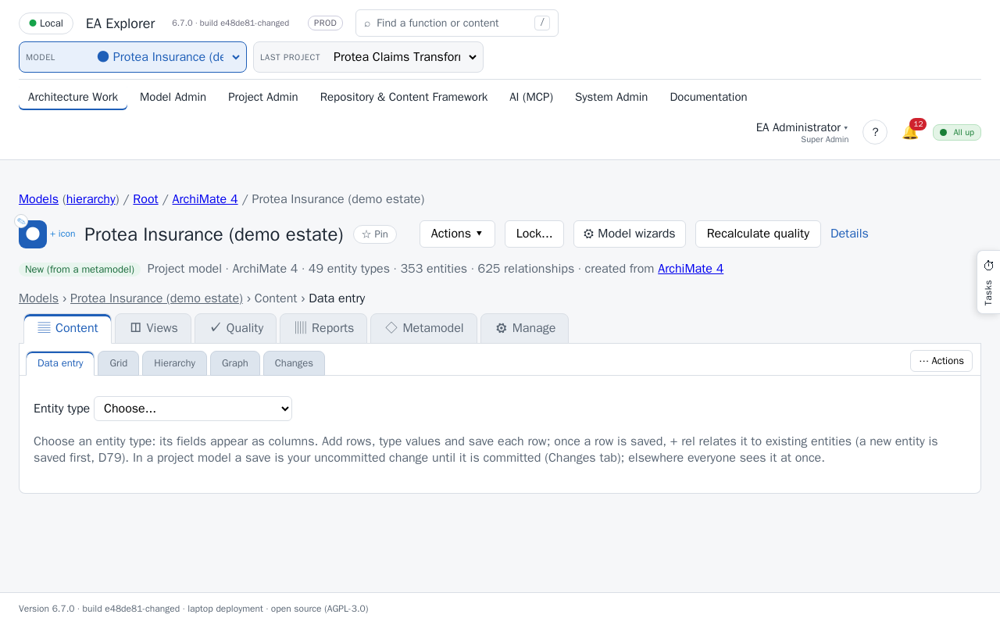

Add an entity
For: Practising architects
A new capability, application, process or any other element, in a form.

#/metamodel/{m}/entryWhy do this
Entities are the building blocks of the architecture. Adding one through the form checks its type, required values and near-duplicate names as you save, which keeps the model clean from the start. It stays your uncommitted change until it is committed. See Versions, tags and merging.
Content work is the everyday heart of architecture: recording what exists and what should, and how it all connects. EA Explorer checks it against the metamodel as you go and keeps it as your change until it is reviewed.
In TOGAF terms: Phases B, C and D: recording the building blocks and relationships of the baseline and target architectures. See EA Explorer and the TOGAF Standard.
The goal: A new capability, application, process or other element is in the model.
Before you start You need a role on the model that may change content (Architect or higher).
Steps
- Open the model, Content › Data entry.
- Choose the entity type, then + New.
- Fill in its name and attributes (a * marks a required one); Save.
- It is your uncommitted change until committed.
If something goes wrong
Already in the model: a close name exists. Use this one, or carry on to make a new one.